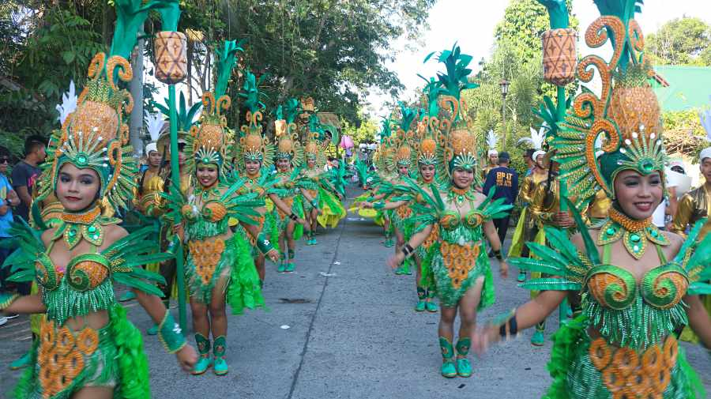
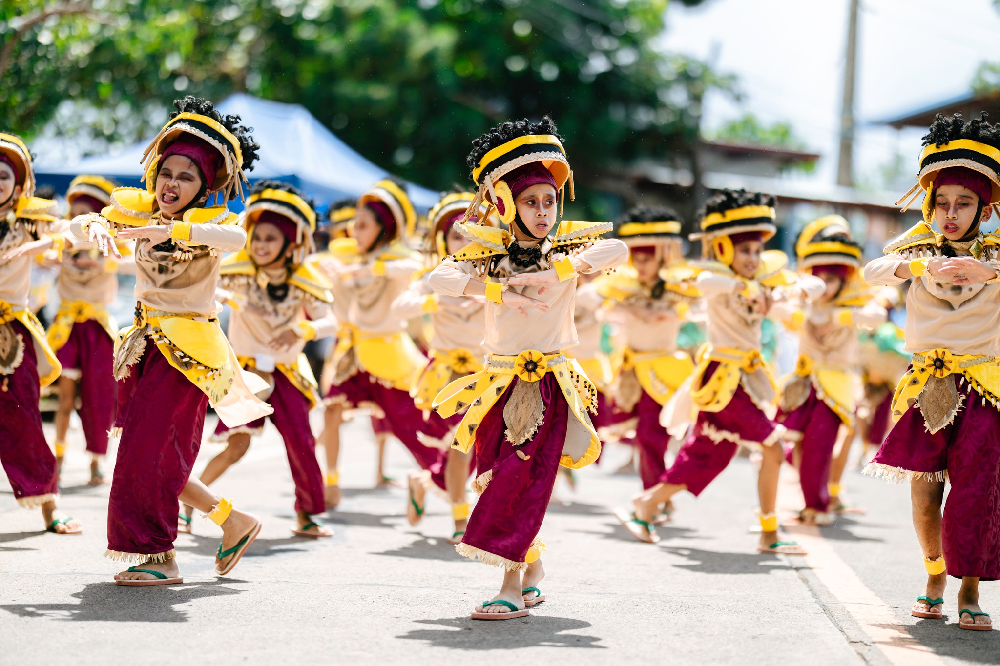
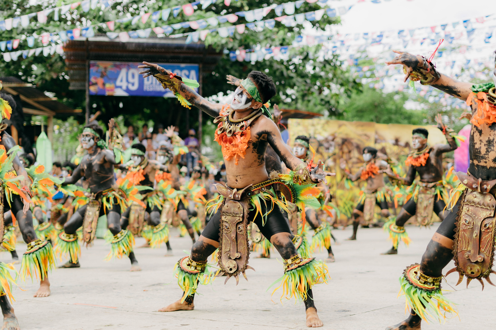
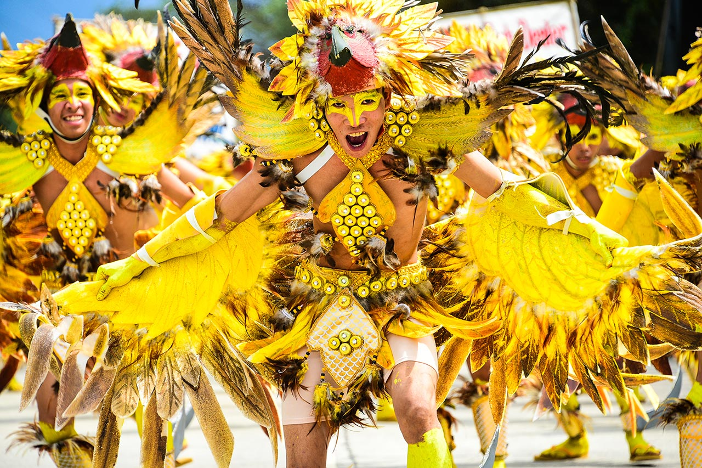
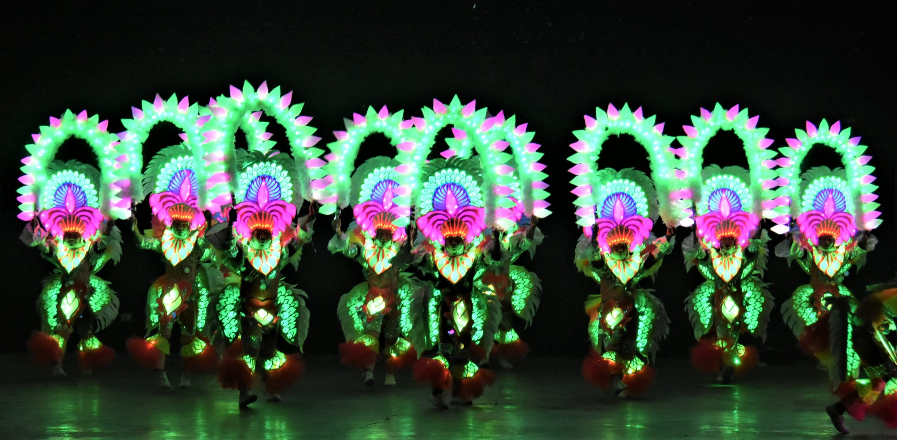

Major Festivals of Negros Occidental

MassKara Festival
Bacolod City
The MassKara Festival is Bacolod City's most beloved and internationally recognized celebration. "MassKara" combines "masa" (crowd) and "cara" (face) in Filipino and Spanish, meaning "many faces." The festival is defined by elaborate smiling masks, explosive street dancing, and kaleidoscopic costumes.
Born in 1980 as a response to twin tragedies — a maritime disaster and the province's economic collapse due to falling sugar prices — MassKara was conceived to uplift Bacolod's spirit. Today, it symbolizes resilience, joy, and the defining characteristic of the Negrense: the smile that never fades.

Pasalamat Festival
La Carlota City
The Pasalamat Festival in La Carlota City is a heartfelt thanksgiving celebration rooted in the province's agricultural identity. "Pasalamat" means "thanksgiving" in Hiligaynon, and the festival honors the sugar industry and the blessings it has bestowed upon the community.
The streets fill with colorful street dancing troupes in spectacular costumes, accompanied by music and drums. Thanksgiving rituals, trade fairs, and cultural shows bring together residents in a spirit of gratitude and unity that resonates deeply with Negros Occidental's sugarcane heritage.

Kali Kalihan Festival
Bago City
Bago City's Kali Kalihan Festival is a vibrant celebration that honors the city's martial arts heritage and cultural identity. "Kali" refers to the ancient Filipino martial art, and the festival weaves together athletic tradition with artistic expression in a spectacular public celebration.
Intricate costumes, dramatic street dancing performances, and community sports competitions highlight Bago City's unique identity and civic pride. The festival draws thousands of spectators and participants from across the province.

Dinagsa Festival
Cadiz City
The Dinagsa Festival is Cadiz City's colorful annual celebration held every January in honor of the Santo Niño (Child Jesus). The festival fills the city's streets with energetic street dancing, vibrant costumes, and a festive parade that celebrates faith and community.
Dinagsa also pays tribute to Cadiz City's rich maritime heritage, honoring the fishermen and fishing communities that sustain the city's economy. A fluvial parade on the sea is one of the festival's most dramatic highlights, drawing crowds of worshippers and spectators alike.

Panaad sa Negros Festival
Bacolod City
Known as the "Festival of All Festivals," Panaad sa Negros gathers all 32 cities and municipalities of Negros Occidental every April to showcase their unique culture, food, dances, and traditions. It's a week-long celebration that highlights the diversity and unity of the province.
Visitors can explore themed pavilions, enjoy local delicacies, watch cultural performances, and witness competitions that bring out the best of each town. The festival is a vibrant display of heritage, pride, and community spirit.

Bailes de Luces Festival
La Castellana
Bailes de Luces, or "Festival of Lights," is celebrated every December 30 in La Castellana. Dancers wear LED-lit costumes and perform choreographed routines that transform the streets into a dazzling spectacle of light and color.
The festival symbolizes hope and joy, ending the year with a vibrant celebration that attracts both locals and tourists. It's a unique cultural event that combines modern creativity with traditional merrymaking.